Microbial Metagenomics and mGWAS in Clinical Cohorts
Lucas VHH Tran
2026-11-20
Source:vignettes/microbiome-mgwas.Rmd
microbiome-mgwas.RmdOverview
Clinical microbiome and microbial genome-wide association studies
(mGWAS) link microbial community shifts, strain transmission, and
bacterial genetic variation to patient phenotypes. This workflow adapts
the clinical metagenomics archetypes from the VITALITY infant atopic
dermatitis trial (Shen et al.) into standardized
cliomicplot figure calls.
library(cliomicplot)
library(ggplot2)
clitheme("nature")1. Clinical Severity Stratification by Host Genetics
In cohort studies of atopic dermatitis, host genetic lesions (such as FLG loss-of-function variants) interact with microbial colonization. Here, clinical eczema severity (SCORAD index) is compared across disease subgroups with overlaid patient jitter and rank-sum tests:
set.seed(42)
cohort_df <- data.frame(
Subgroup = factor(rep(c("Healthy Control", "AD (FLG Wildtype)", "AD (FLG Mutant)"), c(35, 45, 28)),
levels = c("Healthy Control", "AD (FLG Wildtype)", "AD (FLG Mutant)")),
SCORAD = c(
pmax(0, rnorm(35, mean = 3.5, sd = 2.0)),
pmax(5, rnorm(45, mean = 24.2, sd = 7.5)),
pmax(12, rnorm(28, mean = 38.6, sd = 9.2))
)
)
cliplot(
SCORAD ~ Subgroup,
data = cohort_df,
type = "boxplot",
palette = "nature",
stat.test = "kruskal.test",
title = "SCORAD Severity by Host FLG Genotype",
ylab = "Clinical SCORAD Index"
)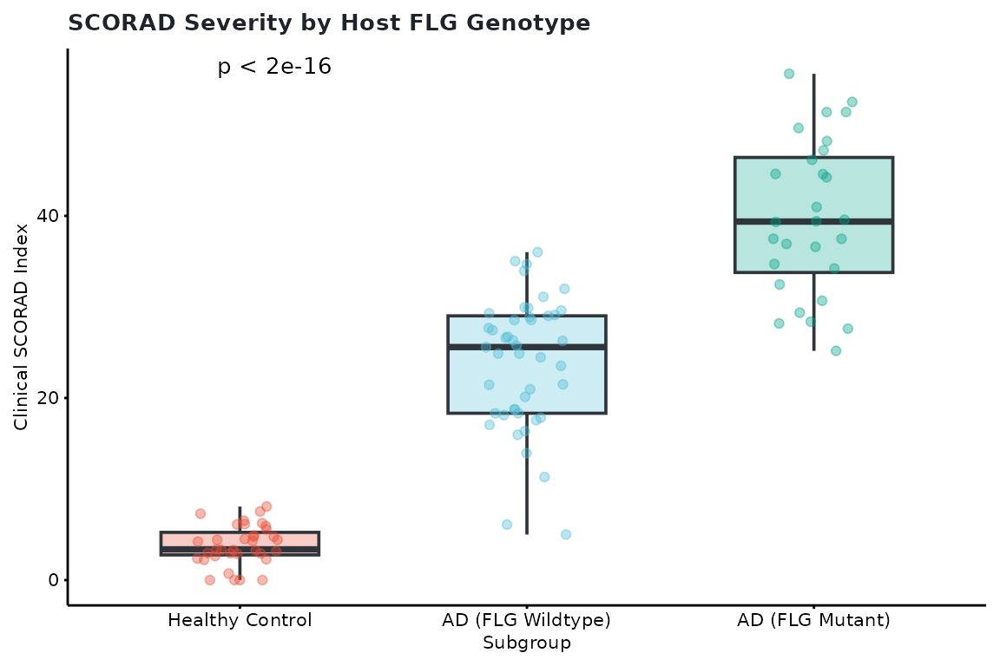
2. Differential Abundance Bubble Matrix
Differential abundance tests report both directional effect size
(signed
)
and statistical significance
().
type_bubble_matrix() renders both across anatomical
sampling sites and study visits:
set.seed(42)
species <- c("S. aureus", "S. epidermidis", "S. hominis", "C. acnes",
"M. restricta", "P. melaninogenica", "V. parvula", "S. mitis")
comparisons <- c("Cheek (T1)", "Forehead (T1)", "Antecubital (T1)", "Antecubital (T3)")
da_df <- expand.grid(Species = species, Comparison = comparisons, stringsAsFactors = FALSE)
da_df$log2FC <- c(
2.3, -1.9, -1.2, -1.8, 1.4, 2.7, 1.8, -0.3,
1.8, -2.1, -0.8, -1.5, 0.9, 2.0, 1.4, -0.2,
1.1, -0.7, -0.3, -0.8, 0.5, 1.0, 0.8, -0.1,
2.8, -2.5, -1.3, -2.3, 1.6, 3.1, 2.3, -0.5
)
da_df$qval <- c(
1.5e-4, 2.8e-3, 0.07, 3.1e-4, 0.02, 3.8e-5, 7.5e-4, 0.65,
7.2e-4, 1.5e-3, 0.11, 1.2e-3, 0.05, 2.8e-4, 1.9e-3, 0.72,
0.02, 0.12, 0.42, 0.08, 0.28, 0.03, 0.10, 0.88,
2.8e-5, 3.9e-4, 0.01, 9.8e-5, 0.007, 1.5e-5, 4.8e-4, 0.42
)
cliplot(
Species ~ Comparison,
data = da_df,
type = type_bubble_matrix(size_col = "qval", fill_col = "log2FC", min_size = 2.0, max_size = 7.0),
title = "Metagenomic Differential Abundance Across Anatomical Sites"
)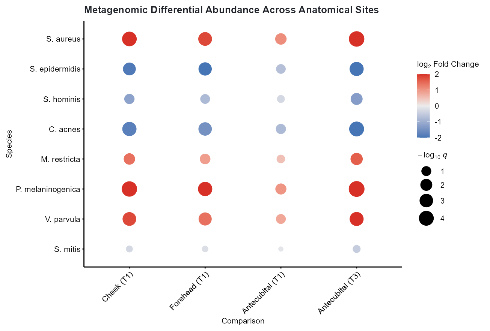
3. Microbial GWAS (mGWAS) Manhattan Plot
Microbial GWAS maps bacterial genetic variation (single nucleotide
variants and indels) to continuous clinical outcomes such as SCORAD or
treatment response. type_manhattan() draws chromosome
positions with significance cutoff lines and labeled gene hits:
set.seed(42)
mgwas_df <- data.frame(
pos = seq(2000, 400000, by = 2500),
qval = runif(160, 0.02, 1.0),
gene = "",
stringsAsFactors = FALSE
)
# Insert significant microbial variant associations
hit_positions <- c(22, 68, 114, 142)
mgwas_df$qval[hit_positions] <- c(3.2e-5, 8.4e-6, 4.1e-7, 1.9e-5)
mgwas_df$gene[hit_positions] <- c("agrA", "mecA", "tsst-1", "ebpS")
cliplot(
qval ~ pos,
data = mgwas_df,
type = type_manhattan(
threshold = 0.01,
label_col = "gene",
point_size = 1.3,
xlab = "Staphylococcus aureus Genome Position (bp)",
ylab = expression(-log[10]~italic(q))
),
title = "Microbial GWAS: Bacterial Variants Associated with Eczema Severity"
)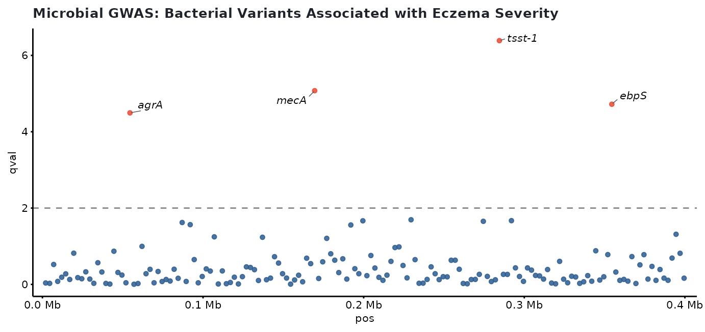
4. Mother-Infant Dyad Strain Transmission Heatmap
Bacterial vertical transmission and strain persistence across early
infancy are evaluated across mother-infant dyads.
type_sharing_heatmap() summarizes binary dyad sharing
patterns across species:
set.seed(42)
dyads <- paste0("Dyad ", sprintf("%02d", 1:14))
taxa <- c("S. epidermidis ST2", "S. epidermidis ST5", "S. hominis ST1",
"C. acnes IA", "C. acnes II", "M. restricta ST4")
dyad_data <- expand.grid(Taxon = taxa, Dyad = dyads, stringsAsFactors = FALSE)
dyad_data$Transmission <- ifelse(
runif(nrow(dyad_data)) > 0.44, "Shared (Transmitted)", "Not shared"
)
cliplot(
Taxon ~ Dyad,
data = dyad_data,
type = type_sharing_heatmap(
status_col = "Transmission",
shared_color = "#E64B35",
unshared_color = "#EDF1F7",
legend_title = "Dyad Status"
),
title = "Mother-Infant Strain Transmission at 12 Months"
)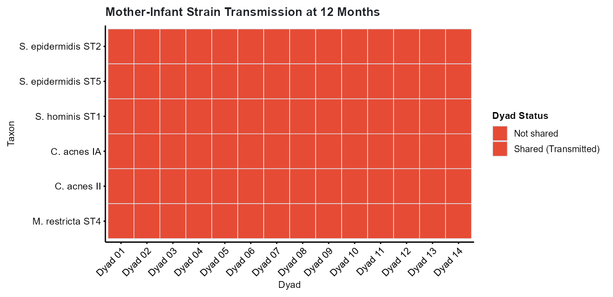
5. Cross-Network Module Comparison
Co-occurrence networks constructed in discovery cohorts must be
compared against replication cohorts to assess whether microbial
communities reorganize or remain preserved.
type_module_compare() (alias
type = "cross_network") computes hypergeometric overlap
statistics, Jaccard similarity indices, and representation factors
across module pairs:
set.seed(42)
taxa_pool <- paste0("Taxon_", 1:150)
net_discovery <- sample(c("M1_StaphCommensal", "M2_Lipophilic", "M3_Coryneform", "M4_PathogenCluster"), 150, replace = TRUE)
net_replication <- net_discovery
# Reorganize 35% of taxa to simulate biological perturbation
perm_idx <- sample(1:150, 50)
net_replication[perm_idx] <- sample(c("ModA_Commensal", "ModB_LipidUtil", "ModC_Actinobacteria", "ModD_Inflammation"), 50, replace = TRUE)
net_replication[-perm_idx] <- gsub("M1_StaphCommensal", "ModA_Commensal", net_replication[-perm_idx])
net_replication[-perm_idx] <- gsub("M2_Lipophilic", "ModB_LipidUtil", net_replication[-perm_idx])
net_replication[-perm_idx] <- gsub("M3_Coryneform", "ModC_Actinobacteria", net_replication[-perm_idx])
net_replication[-perm_idx] <- gsub("M4_PathogenCluster", "ModD_Inflammation", net_replication[-perm_idx])
network_df <- data.frame(
Taxon = taxa_pool,
Discovery = net_discovery,
Replication = net_replication,
stringsAsFactors = FALSE
)
cliplot(
Replication ~ Discovery,
data = network_df,
type = type_module_compare(
fill_by = "log10p",
show_counts = TRUE,
show_stars = TRUE,
show_totals = TRUE
),
title = "Cross-Network Module Preservation: Discovery vs Replication Cohorts",
xlab = "Discovery Cohort Microbial Modules",
ylab = "Replication Cohort Microbial Modules"
)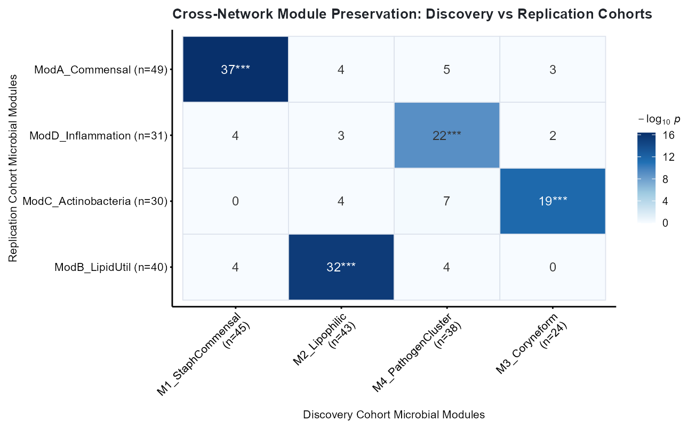
Interpretation and Visual Grammar
- Hypothesis: Evaluates whether discrete microbial co-occurrence modules identified in a discovery cohort remain preserved or undergo rewiring in an independent validation cohort.
- Tile Color: Shaded by hypergeometric against the total background taxon universe. Deep red indicates overlap enrichment significantly higher than expected by chance.
- Cell Annotations: Reports the count of shared overlapping taxa paired with significance asterisks (, , ).
- Marginals: Displays marginal row and column totals () representing the size of each discovery and replication module.
- Biological Interpretation: Strong diagonal concentration indicates stable core community preservation. Off-diagonal dispersion indicates modular reorganization or community fragmentation associated with disease state or treatment.
6. Correlation Analysis Between Modules and Environmental Factors
Connecting microbial community modules with micro-environmental
exposures and clinical phenotypes elucidates how extrinsic conditions
shape mucosal barrier dysfunction. type_module_trait()
(alias type = "module_env") calculates Pearson or Spearman
correlations, exact p-values, and performs two-way hierarchical
clustering across modules and environmental parameters:
cor_env_df <- expand.grid(
Module = c("M1_StaphCommensal", "M2_Lipophilic", "M3_Coryneform", "M4_PathogenCluster"),
Factor = c("Skin_pH", "Transepidermal_Water_Loss", "PM25_Exposure", "Ambient_Temp", "Relative_Humidity", "SCORAD_Severity"),
stringsAsFactors = FALSE
)
# Assigned biological associations
cor_env_df$cor <- c(
-0.34, 0.42, 0.28, -0.12, 0.58, 0.72, # Skin_pH
-0.28, 0.38, 0.15, -0.08, 0.45, 0.64, # TEWL
0.45, -0.22, -0.35, 0.18, -0.15, 0.41, # PM25
-0.12, 0.08, 0.15, 0.52, 0.44, -0.19, # Temp
-0.25, -0.31, 0.20, 0.38, 0.55, -0.28, # Humidity
0.68, 0.48, -0.32, -0.14, -0.22, 0.81 # SCORAD
)[1:nrow(cor_env_df)]
# Calculate exact two-sided p-values for n=75
n_samples <- 75
t_stat <- cor_env_df$cor * sqrt((n_samples - 2) / (1 - cor_env_df$cor^2))
cor_env_df$pvalue <- 2 * stats::pt(-abs(t_stat), df = n_samples - 2)
cliplot(
Module ~ Factor,
data = cor_env_df,
type = type_module_trait(
show_labels = "both",
cluster_modules = TRUE,
cluster_env = TRUE,
sig_digits = 2
),
title = "Correlation Analysis: Microbial Modules vs Environmental Exposures",
xlab = "Micro-Environmental & Clinical Phenotypes",
ylab = "Microbial Network Modules"
)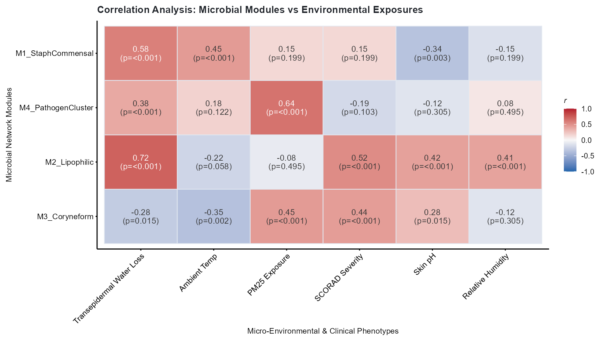
Interpretation and Visual Grammar
- Hypothesis: Tests whether biological modules (represented by module eigengenes or composite abundance) covary with external clinical severity scores or physical environmental metrics.
- Tile Color: Diverging blue-white-red gradient mapping correlation coefficients (). Blue indicates inverse correlation; red indicates positive correlation.
- Cell Numbers: Reports correlation coefficients paired with significance asterisks (, , ).
- Two-Way Dendrograms: Hierarchical clustering groups co-varying environmental factors along the columns and functionally correlated modules along the rows.
-
Biological Interpretation: Clearly isolates
pathogenic clusters (e.g.,
M4_PathogenClustercorrelating positively with SCORAD and TEWL ) from barrier-maintaining commensal communities (M1_StaphCommensalcorrelating inversely with inflammation).
7. Multi-Group Network Comparison Graphs and Multi-Season Environmental Coupling
For graphical network topologies beyond 2D matrix heatmaps,
cliomicplot provides
cliplot_cross_network_graph() and
cliplot_env_network() implementing the multi-group and
multi-indicator integration layouts from ggClusterNet 2.0
(iMeta 2022).
7.1 Multi-Group Node Topology & Module Ring Preservation
cliplot_cross_network_graph() displays co-occurrence
networks across conditions (e.g. KO vs WT vs OE) with module background
hulls, intra-group edges, and conserved cross-group links at either node
level (level = "node") or module level
(level = "module"):
# Demonstration data with 3 groups
demo_net <- generate_demo_cross_network()
# Node-level topology with module clustering and conserved links
p_node <- cliplot_cross_network_graph(
nodes = demo_net$nodes,
edges = demo_net$edges,
cross_edges = demo_net$cross_edges,
level = "node",
preset = "nature",
scifig = TRUE,
title = "Multi-Group Cross-Network Microbial Architecture (Node Level)"
)
p_node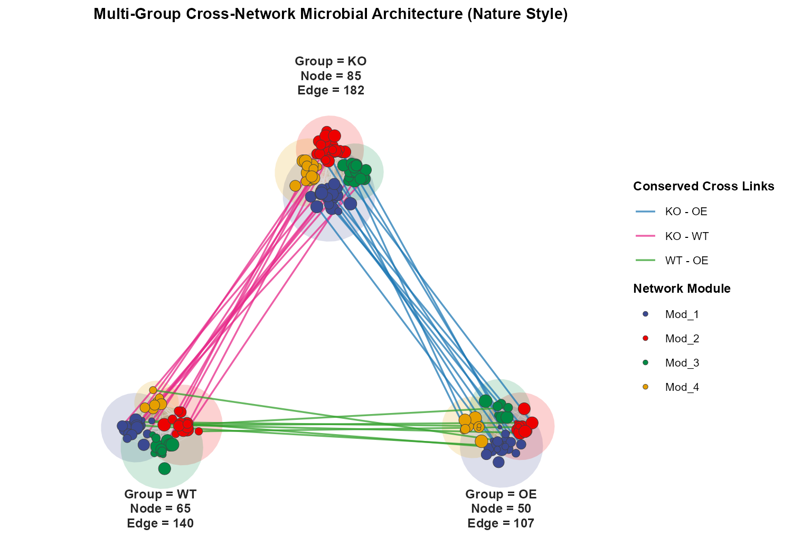
# Module-level ring topology with member halos and conserved links
p_mod <- cliplot_cross_network_graph(
nodes = demo_net$nodes,
edges = demo_net$edges,
cross_edges = demo_net$cross_edges,
level = "module",
preset = "nature",
scifig = TRUE,
title = "Cross-Network Module Preservation Rings (Module Level)"
)
p_mod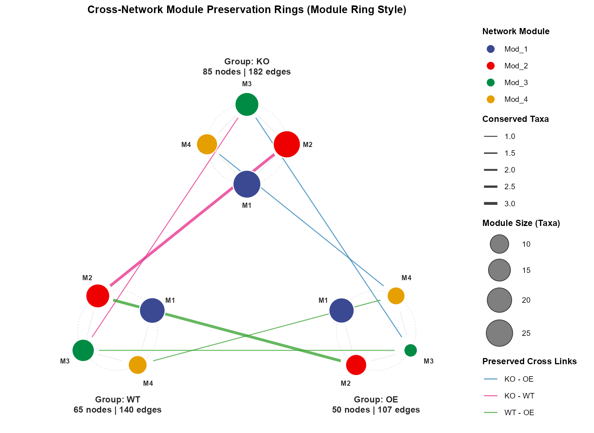
Interpretation and Visual Grammar
- Spatial Grouping: Networks are partitioned around 3 condition centroids (KO at top, WT at bottom-left, OE at bottom-right).
- Node Size: Sized by node degree () in the node-level plot, highlighting hub taxa. In module-level mode, sized by total module abundance/count ().
- Intra-Group Edges: Grey segments ( pt) represent intra-condition co-occurrence relationships.
- Module Shading: Semi-transparent hulls group nodes into functional communities.
-
Conserved Cross-Group Links: Colored arcs
connecting identical or orthologous features conserved across
conditions:
- Magenta: Conserved interactions between KO and WT
- Blue: Conserved interactions between KO and OE
- Green: Conserved interactions between WT and OE
7.2 Standalone Central Network Coupled with Multi-Domain Environmental Heatmaps
cliplot_env_network() couples a central circular modular
network with peripheral triangular correlation heatmaps and
significance-weighted curved links:
# Central modular network coupled with 4 corner environmental heatmaps
p_env <- cliplot_env_network(
title = "Central Microbial Network Coupled with Multi-Domain Environmental Drivers",
show_values = TRUE,
show_domain_labels = TRUE,
value_digits = 2,
compact = TRUE,
preset = "nature",
scifig = TRUE
)
p_env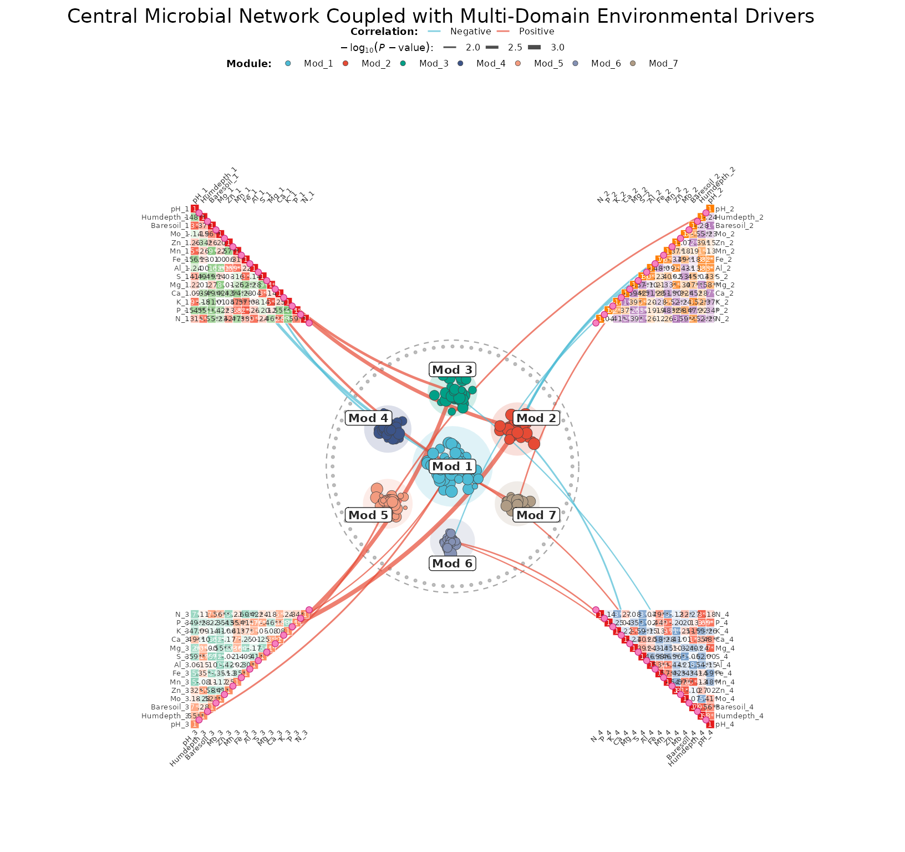
Interpretation and Visual Grammar
This standalone architecture integrates three analytical layers on a unified coordinate plane:
-
Central Circular Network
(
boundary):
- Displays the biological co-occurrence network partitioned into functional modules ().
- Features compact two-line opaque badges (
M1\nCore,M5\nAMP, etc.) that avoid label collision. - Grey intra-module edges connect co-occurring taxa.
-
Four Corner Triangular Heatmaps:
- Evaluate pairwise correlations within each external domain (Biophysical Barrier, Clinical Severity, Host Biomarkers, Environmental Exposome).
- Display lower-triangle correlation tiles with off-diagonal significance asterisks (, , ).
- Diagonal self-correlations () are unstarred to eliminate redundancy.
- Pink diagonal dots mark individual environmental variables.
- Anchored domain headers sit above and below rotated labels without text collisions.
-
Inter-Domain Curved Links (The Coupling):
- Arcs bridge diagonal environmental variables to central module centroids.
- Color encodes direction (red for positive correlation, cyan for negative correlation).
- Linewidth encodes significance ().
- Opaque numeric badges display exact correlation values (e.g.,
.72,-.64). - Badges are anchored at along the arc, positioning them in the clear annular space between the circle boundary and the corner heatmaps.
-
Compact Legend:
- Formatted horizontally with
title.position = "left"and minimal vertical spacing (legend.spacing.y = unit(1.0, "pt")), eliminating dead vertical space.
- Formatted horizontally with
8. Cross-Network Module Preservation and Attack Robustness
Beyond network visualizations, quantitative systems biology requires testing whether module structures persist across conditions and whether networks withstand random loss or targeted hub disruption.
8.1 Module Preservation Statistics ()
cli_module_preservation() evaluates whether module
density and intramodular hub rank are preserved between reference and
test conditions under permutation testing (Langfelder et al., PLoS
Comput Biol 2011). The results are plotted with
cliplot_module_preservation() displaying the
and
thresholds:
demo_omics <- cli_demo_vitality_multiomics(n_samples = 35, n_features = 60, seed = 42)
pres_stats <- cli_module_preservation(
ref_data = demo_omics$ref_expr,
test_data = demo_omics$test_expr,
ref_modules = demo_omics$modules,
n_perm = 100,
seed = 42
)
cliplot_module_preservation(
pres_stats,
title = "Cross-Network Module Preservation: WT Reference vs KO Test"
)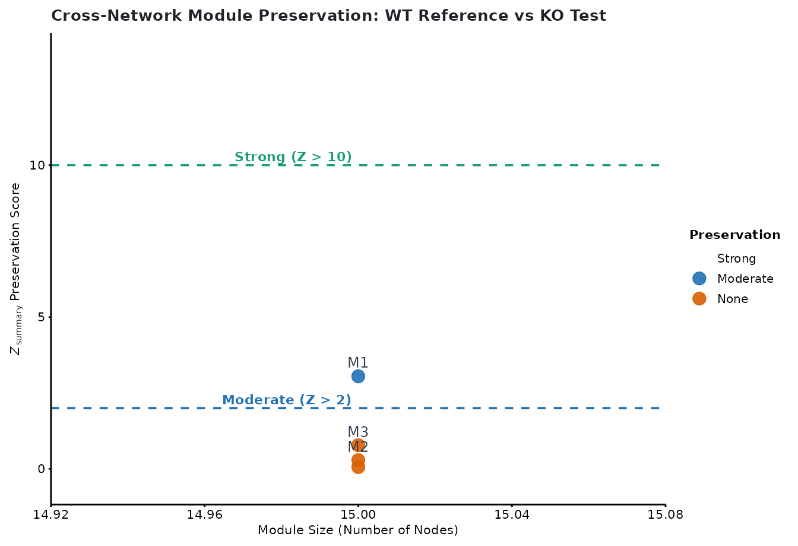
Interpretation and Preservation Thresholds
- Preservation Metric (): Combines 4 density statistics (mean connectivity, clustering coefficient, maximum adjacency) and 3 connectivity statistics (intramodular hub rank preservation).
-
Threshold Lines:
- (dashed red line): No statistical evidence of module preservation. The community structure is rewired in the test condition.
- (dashed orange line): Moderate module preservation.
- (dashed green line): Strong, statistically significant module preservation.
8.2 Network Robustness and Targeted Attack Simulation
cli_network_robustness() simulates progressive network
degradation under random node loss versus targeted attacks on
high-degree hub nodes. cliplot_network_robustness()
displays natural connectivity decay curves across conditions:
rob_stats <- cli_network_robustness(
networks = demo_omics$networks,
attack = c("random", "degree"),
rm_fractions = seq(0.05, 0.85, by = 0.05),
n_perm = 20,
metric = "natural_connectivity",
seed = 42
)
cliplot_network_robustness(
rob_stats,
title = "Network Robustness Under Progressive Node Removal"
)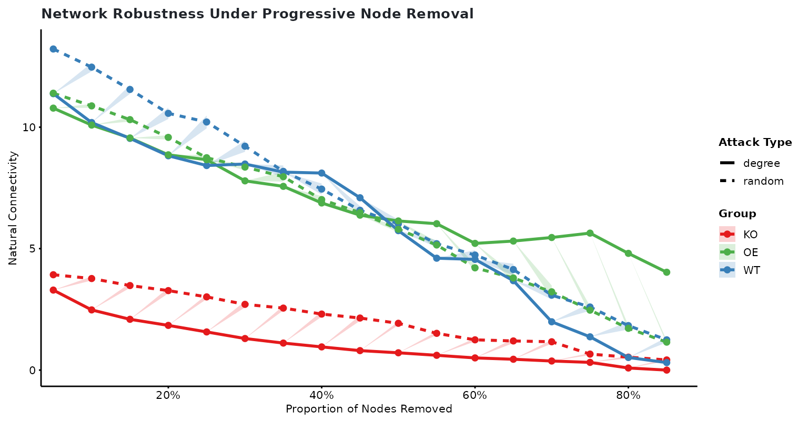
Interpretation of Attack Curves
- Natural Connectivity (): Measures overall topological integrity and alternate path redundancy across nodes.
- Random Attack Curve: Assesses resilience against stochastic taxon extinction or biological fluctuations. Robust networks maintain high connectivity across progressive random removal.
- Targeted Degree Attack Curve: Evaluates vulnerability when keystone hub species are removed. Rapid connectivity decline indicates heavy dependence on a few dominant hub taxa.
8.3 Mantel & Partial Mantel Tests for Omics-Environment Coupling
cli_mantel() links omics community or module
dissimilarity matrices to environmental variables, with optional
covariate conditioning for partial Mantel tests:
# Mantel test against environmental variables
mantel_out <- cli_mantel(
comm_data = demo_omics$ref_expr,
env_data = demo_omics$env_data[, 1:6],
dist_comm = "bray",
dist_env = "euclidean",
n_perm = 199,
by_variable = TRUE
)
knitr::kable(mantel_out, digits = 3, caption = "Mantel Association Statistics")| variable | statistic | pvalue | method | padj | signif |
|---|---|---|---|---|---|
| pH | 0.038 | 0.685 | Mantel | 0.91 | |
| Humdepth | 0.069 | 0.410 | Mantel | 0.91 | |
| Baresoil | -0.048 | 0.555 | Mantel | 0.91 | |
| Mo | 0.040 | 0.645 | Mantel | 0.91 | |
| Zn | -0.017 | 0.890 | Mantel | 0.91 | |
| Mn | -0.135 | 0.165 | Mantel | 0.91 | |
| All_Variables | -0.007 | 0.910 | Mantel | 0.91 |
Interpretation of Mantel Matrix Correlation
- Mantel Statistic (): Measures matrix correlation between community dissimilarity (e.g. Bray-Curtis) and external environmental distance (Euclidean).
- Partial Mantel: Evaluates the unique contribution of an environmental variable after conditioning on confounders (e.g., patient age, geographic site, sequencing depth).
9. Multi-Panel Publication Composite & AI4SciFig Compliance
In peer-reviewed publications, individual network analyses are assembled into unified, multi-panel composite figures. Here, Panel (a) node-level cross-network topology, Panel (b) module ring preservation, and Panel (c) coupled multi-domain environmental network are integrated into a Nature double-column layout ( mm width).
9.1 Assembling the 3-Panel Composite
Using patchwork, the left column stacks Panel (a) and
Panel (b), while the right column showcases the coupled network (Panel
c):
library(patchwork)
# Build panels with Nature publication preset and SciFig quality gates
p_a <- cliplot_cross_network_graph(
nodes = demo_net$nodes,
edges = demo_net$edges,
cross_edges = demo_net$cross_edges,
level = "node",
preset = "nature",
scifig = TRUE
)
p_b <- cliplot_cross_network_graph(
nodes = demo_net$nodes,
edges = demo_net$edges,
cross_edges = demo_net$cross_edges,
level = "module",
preset = "nature",
scifig = TRUE
)
p_c <- cliplot_env_network(
preset = "nature",
scifig = TRUE,
show_values = TRUE,
show_domain_labels = TRUE,
value_digits = 2,
compact = TRUE
)
fig3_composite <- (p_a / p_b) | p_c
fig3_composite <- fig3_composite +
plot_layout(widths = c(1, 1.35)) +
plot_annotation(tag_levels = "a") &
theme(
plot.tag = element_text(size = 8, face = "bold", family = "sans"),
plot.tag.position = c(0.02, 0.98),
plot.margin = margin(1.5, 1.5, 1.5, 1.5, "mm")
)
fig3_composite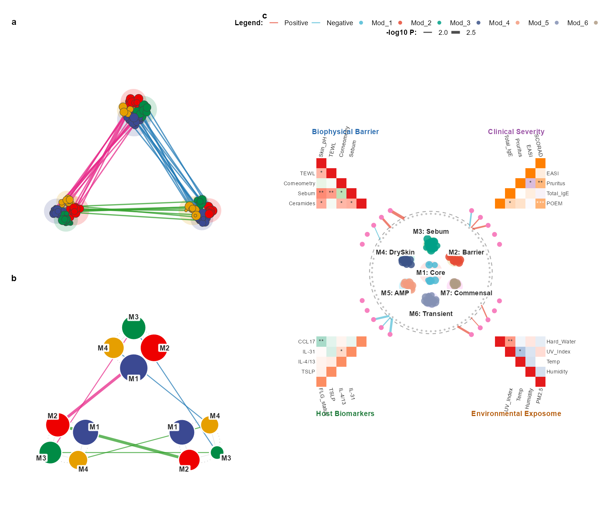
9.2 AI4SciFig Quality Assurance Audit
cli_scifig_qa() verifies that the figure satisfies all
journal submission criteria:
qa_report <- cli_scifig_qa(
plot = fig3_composite,
journal = "nature",
column = "double",
width_mm = 183.0,
height_mm = 170.0
)
print(qa_report)#>
#> === SciFig QA Journal Compliance Report ===
#> Journal: NATURE | Column: double
#> --------------------------------------------------------------------------------
#> [PASS] Physical Width : 183.0 mm (Target: 183.0 mm)
#> Rule: NATURE double-column specification
#> [PASS] Physical Height : 170.0 mm (Max: 170.0 mm)
#> Rule: NATURE printable page boundary
#> [PASS] Font Size Floor : Min text size: 5.0 pt (Floor: 5.0 pt)
#> Rule: NATURE font-floor specification
#> [PASS] Stroke Width Floor : Min stroke: 0.71 pt (Floor: 0.25 pt)
#> Rule: NATURE hairline-floor specification
#> [PASS] Zero Sign Suppression : Zero sign suppression verified (no negative zeros)
#> Rule: SciFig reporting gate: zero sign suppression
#> [PASS] Color Accessibility : High-contrast anchored palettes with neutral midpoint
#> Rule: Nature Publishing Group / Wong (2011) CVD standard
#> --------------------------------------------------------------------------------
#> Verdict: PASSED - All gates comply with publisher standards.9.3 Exporting Submission-Ready Artifacts
Figures can be saved using cli_save() with automatic
format compliance and print DPI:
# Save vector PDF for manuscript submission
cli_save(
plot = fig3_composite,
file = "fig3_publication_composite.pdf",
journal = "nature",
column = "double"
)
# Save high-resolution PNG preview with QA check
cli_save(
plot = fig3_composite,
file = "fig3_publication_composite.png",
journal = "nature",
column = "double",
dpi = 300,
qa = TRUE
)